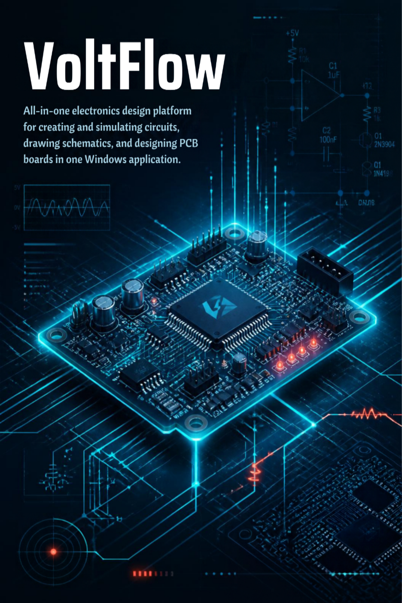

Product announcement · September 22, 2026
VoltFlow is now available in the Microsoft Store
VoltFlow is now available for Windows through the Microsoft Store, giving electronics makers, students, educators, and IoT teams a straightforward way to find and install the desktop app.
A Windows home for connected electronics projects
VoltFlow brings circuit design, microcontroller code, simulation, and project documentation into one workspace. Work with supported Arduino and ESP boards, keep firmware beside the circuit it controls, and use examples to move from a first idea to a testable prototype.
For connected-device projects, VoltFlow can also bring the device and its service workflow into view: build and publish API Workers, connect configured database access, inspect incoming telemetry, and generate structured project reports for review and handoff.
Microsoft Store page
https://apps.microsoft.com/store/detail/XP8C6NSN1XM977
Windows Store deep link
ms-windows-store://pdp/?productid=XP8C6NSN1XM977
Continue exploring VoltFlow
The Windows Store release is one way to access VoltFlow. Explore the full product story for circuit design, firmware, IoT Workers, live telemetry, and report generation.
Read the VoltFlow product story